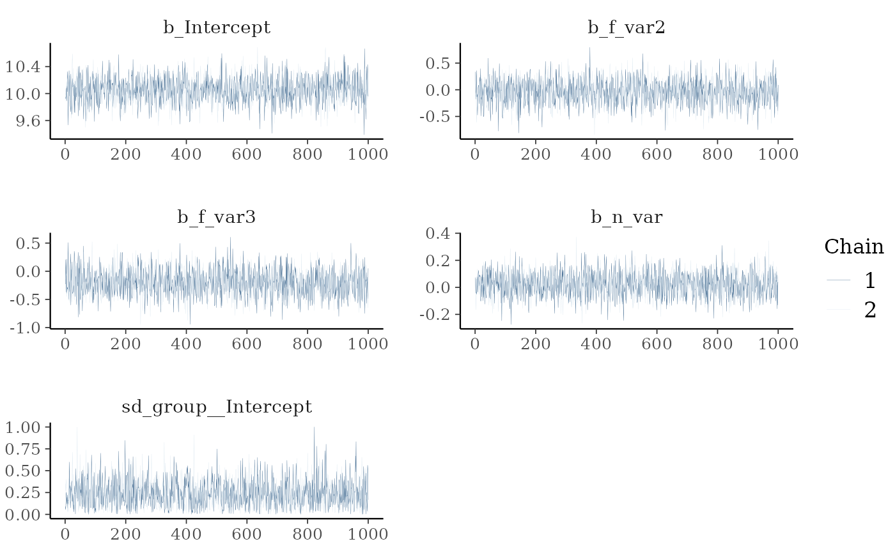
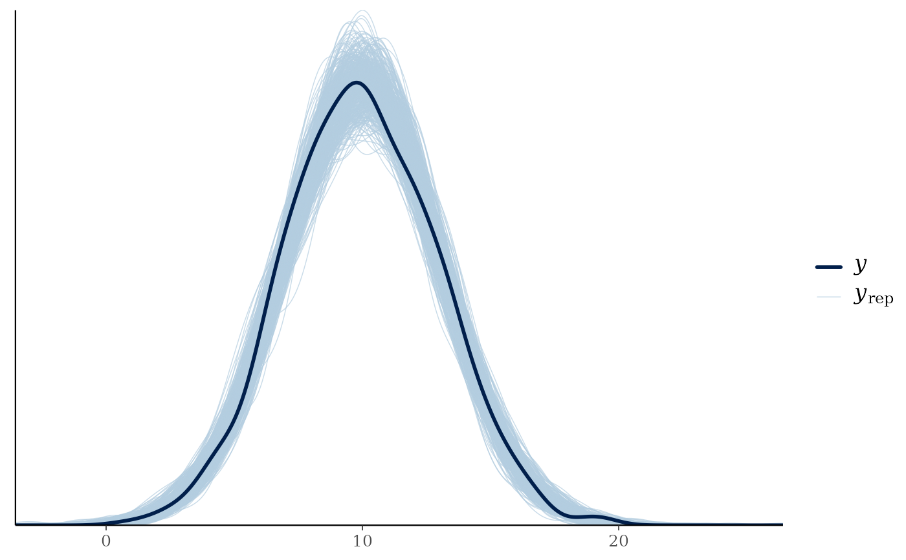
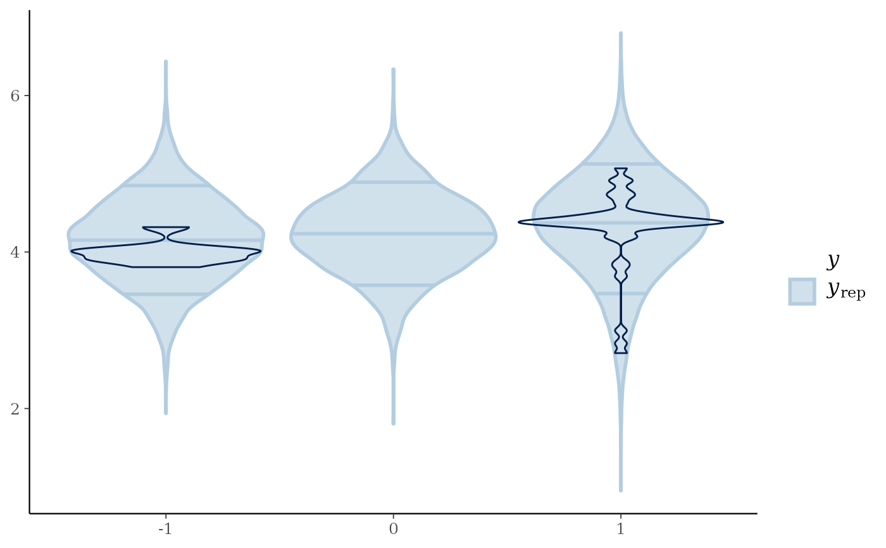
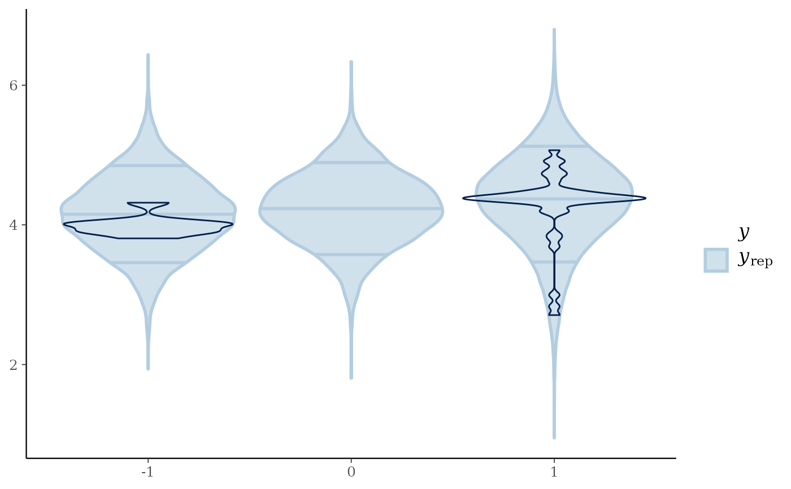

Perform model fit checks for brms models
model_fit(brmsfit, Group = NULL, Prior = FALSE)Arguments
- brmsfit
The output of a brms model. You can use VarDecomp::brms_model() to produce a brmsfit.
- Group
A string containing the name of a grouping variable for the visualization of a posterior predictive check plot (e.g. "sex").
- Prior
A logical argument defining whether the
brmsfitcontains prior samples. If set toTRUEit will produce plots comparing the log distributions of priors and posterior samples for each covariate.
Value
Returns a list containing (a) the maximum R-hat value, (b) the minimum effective sample size, (c) traceplots, (d) posterior predictive check plots, and (e) prior and posterior sample plots (if priors are available).
Examples
md = dplyr::starwars
# Centering variables
md = md %>%
dplyr::select(mass, sex, height, species) %>%
dplyr::mutate(mass = log(mass),
sex = dplyr::recode(sex, "male" = 1,
"female" = -1,
"hermaphroditic" = 0,
"none" = as.numeric(NA)))
# Without random effects
mod = brms_model(Chainset = 2,
Response = "mass",
FixedEffect = c("sex","height"),
Family = "gaussian",
Data = md,
PriorSamples = TRUE)
#> [1] "No problem 🙃"
#> Warning: Rows containing NAs were excluded from the model.
#> Compiling Stan program...
#> Start sampling
model_fit(mod, Group = "sex", Prior = TRUE)
#> No divergences to plot.
#> Using all posterior draws for ppc type 'loo_pit_qq' by default.
#> Warning: Some Pareto k diagnostic values are too high. See help('pareto-k-diagnostic') for details.
#> Warning: Some Pareto k diagnostic values are too high. See help('pareto-k-diagnostic') for details.
#> Using all posterior draws for ppc type 'violin_grouped' by default.
#> $`R-hat and Effective sample size`
#> # A tibble: 1 × 2
#> Rhat EffectiveSampleSize
#> <dbl> <dbl>
#> 1 1.00 1770.
#>
#> $`Traceplots plot`

#>
#> $`Posterior predictive check - Density overlay plot`

#>
#> $`Posterior predictive check - LOO-PIT-QQ plot`
 #>
#> $`Posterior predictive check - Group density overlay plot`
#> Warning: Groups with fewer than two datapoints have been dropped.
#> ℹ Set `drop = FALSE` to consider such groups for position adjustment purposes.

#>
#> $`Prior samples plot`
#> [1] "No prior samples to plot"
#>
#>
#> $`Posterior predictive check - Group density overlay plot`
#> Warning: Groups with fewer than two datapoints have been dropped.
#> ℹ Set `drop = FALSE` to consider such groups for position adjustment purposes.

#>
#> $`Prior samples plot`
#> [1] "No prior samples to plot"
#>